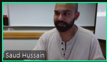

Week 1 Homework Assignment 1
Our amazing instructor below...
Our assignment to complete for the week...
Extend your HTML file by exploring and implementing at least 5 different HTML elements from the MDN HTML Elements Reference
- Choose elements we haven't covered in class
- Add them to your HTML file with meaningful context
- Style at least 3 of them with CSS
- Create a GitHub repository with your files
My Portfolio AKA My Assignment
(it's the only thing I could think of making lol)
Hello there! My name is Silas!
I am a student at SPSCC studying Computer Science. I am currently learning web development with my instructor, Professor Hussain. I have experience with Python, JavaScript, C++, C#, and many others too. I am excited to see what I will learn in this class and how I can apply it to my future career.
Progress bar for creativity and confidence for success in the class
100%
Random Quote
You might not think that programmers are artists, but programming is an extremely creative profession. It's logic-based creativity.
Some Interesting Facts About Me
Favorite Color
My favorite color is green. Although I do like many other colors, but it depends on what the context is
Hobbies
I enjoy hiking and outdoor recreational activities. I also like playing music, reading, and math. I especially enjoy coding though
Random Fact...
How I plan to finish this assignment
I plan to finish this assignment by adding more HTML elements and styling them with CSS. I will also add more content to my portfolio section. I will also make sure to create a GitHub repository with my files.
Here's what I've done so far to accomplish this assignment...
- I've added images using the <img> element
- Added a random quote section with the <figure>, <blockquote>, and <figcaption> elements
- I added an interesting facts section with the <details> and <summary> elements
- Added progress bar using the <progress> element
- Did light styling on the page with CSS and styled at least 3 (actually more) of the elements
With all of those things accomplished, I can now consider this assignment complete!